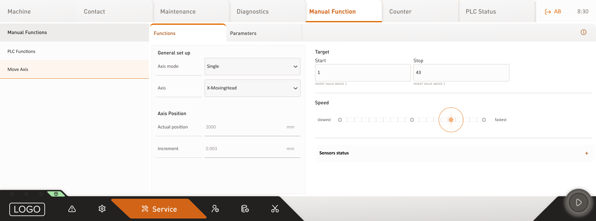

Two brands, one machine, eight interfaces to build — and a development plan that couldn't hit its deadline.
This is the case I took from the first architectural decision to the machine leaving the floor. Nobody asked for a design system — I proposed one, because the client's problem was architectural.
Then I designed both products on top of it, screens and physical controls, and stayed inside the build with the client's development team until it shipped.
My role
Design Lead
Led the design of the screens for both machines, architected the design system, and ran the project — planning, client relationship, and oversight through development. Development by the client's IT team.
Sector
Manufacturing — industrial OEM group (~€390M), built through European acquisitions
Automatic cut screen, redrawn and anonymised under NDA. Light and dark mode for one of the two brands.
01 — The problem
Every product started from zero
The group had grown by acquisition. Two brands shipped the same type of machine, each interface rebuilt from scratch, and the plan on the table was to design and maintain every combination one by one.
That plan meant eight interfaces — two products, two screen sizes, two modes — against development deadlines that were already fixed. Nothing was reused, so nothing got cheaper.
02 — The solution
The system nobody asked for
I designed the HMI for both machines. Then I proposed something that wasn't in scope: a design system, because switching brand and mode without rebuilding is an architecture problem, not a styling one.
I built it from scratch on a variables architecture — one foundation to design and maintain, every variant derived from it. Structure and interaction stay identical across the group; brand lives at the visual layer only. An operator who learns one machine can run another.
One foundation to design and maintain, every configuration derived from it — and a new brand added at any point, without redesigning the products.
03 — The impact
One foundation, eight configurations, deadlines met
01
Eight configurations from one foundation
Designed and maintained as one system instead of eight products — and scalable at any point: a new brand joining the group enters by swapping the foundation, with no product redesign.
02
Deadlines met at a fraction of the projected build cost
On a problem that had looked ungovernable.
03
The client adopted the same tokens in their own codebase
Putting design and development on one logic — and bought follow-on projects, some strategically significant, from a solution that was never in the original scope.
04 — Inside the product — design decisions
Three decisions, and what each one cost
01
The interface isn't the screen
Part of this machine is operated by hand, on physical controls. I designed that boundary — which functions stay physical, what their limits are, and how the screen feeds back what the operator's hands are doing.
Designing hardware and software as one product is slower than designing the screen alone.
02
Designed for gloves and bad light
Operators set the machine up mid-production: gloves on, noise, changing light, inside safety procedures where a wrong parameter ruins the part, not just a screen state. The client asked for the 48px standard minimum — I pushed touch targets to 56px, and made screens carry only what the current task needs with secondary parameters one level away.
It cost rows of density in a project that wanted maximum data on screen, and the client later validated the larger target with their own operators and kept it.

Secondary parameters, one tab away.
03
Built so engineering could scale it without me
Two resolutions could have meant handing over two sets of screens; instead I set up a grid the development team could adapt on their own. The parameter list, dense and inconsistent across both machines, was rebuilt in one session with the front-end and back-end teams, so the structure was buildable the moment we agreed on it — and I stayed through the build, refining whatever was costing the team effort.
More of my time went into someone else's build cost than into more screens, which is the reason the deadlines became reachable.
Same grid logic, two column counts, scaled to each screen's real size. The development team adapted it themselves.
05 — What I'd do differently
The validation happened without me
The client ran the operator sessions and I wasn't there. I'd negotiate that access at kickoff now rather than accept it as given — the card sort happened with the people building the product, not the people using it.